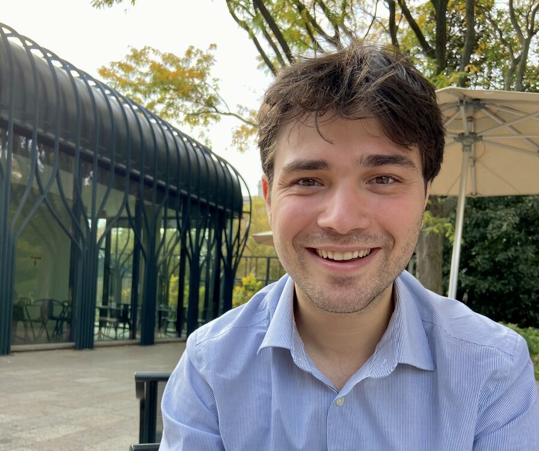

Mathias Labonté
PhD Candidate in Nuclear Physics
University of California, Davis · Lawrence Berkeley National Laboratory
I am a Canadian PhD candidate in nuclear physics at UC Davis, stationed at Lawrence Berkeley National Laboratory. My research focuses on the STAR experiment at the Relativistic Heavy Ion Collider (RHIC), where I study the phase structure and bulk properties of QCD matter through the Beam Energy Scan program. I also work on a number of other interesting things, like development for the future Electron-Ion Collider, machine learning for heavy-ion physics, and instrumentation for particle identification and tracking.
Beyond research, I serve as the elected Junior Representative on the STAR Council, advocating for graduate students and postdocs within the collaboration. I also organize the Physics and Astronomy Peer Mentoring Program at UC Davis, where I help first-year and transfer students transition into the department.
Outside of physics, I enjoy hiking, cooking, bar trivia, brewing beer with the group, and many other things.
Recent News
- Oct 2026 — UC Davis hosts the STAR Collaboration Meeting in Davis. I helped organize the local arrangements.
- Oct 2026 — The Quark Brew-on Plasma has finished production and will be served at the STAR collaboration meeting in Davis. Crisp California Pilsner!
- Sep 2026 — New preprint with Spencer Klein: "Separating coherent and incoherent photoproduction at an Electron-Ion Collider: Comparing lead, gold and silver beams" on arXiv.
- Aug 2026 — My SQM 2026 proceedings, "Light hadron production measurements with Au+Au collisions from √sNN = 3.2–4.5 GeV with STAR", published in the Journal of Subatomic Particles and Cosmology.
- Apr 2026 — Talk at the APS April Meeting 2026 in Denver: "The Endcap Time-of-Flight Detector at STAR."
- Apr 2026 — The eTOF performance paper is published: Nucl. Instrum. Meth. A 1090 (2026) 171612.
- Mar 2026 — New preprint: "Imaging baryon number density within the proton" on arXiv.
- Mar 2026 — Talk at Strangeness in Quark Matter 2026 in Los Angeles: "Bulk property measurements from Au+Au collisions in STAR FXT."
- Feb 2026 — New preprint: "Performance of the Endcap Time-of-Flight detector in the STAR beam-energy scan" on arXiv.
- Jan 2026 — Successful final running at STAR — last collisions at the Relativistic Heavy Ion Collider. A happy and sad time!